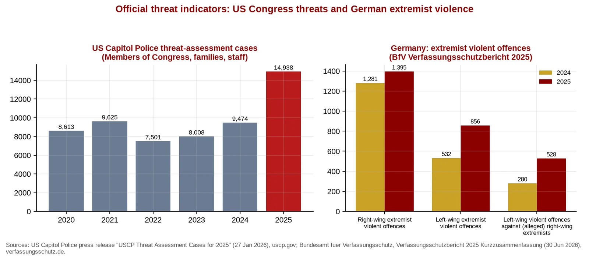

Q5. Threats Against Congress and German Extremist Violence

Graph 10. Left: US Capitol Police threat-assessment cases, 2020-2025. Right: German extremist violent offences, 2024 vs 2025. USCP: 9,474 cases (2024) and 14,938 (2025), a record (USCP threat cases 2025). BfV: right-wing extremist violent offences 1,281 to 1,395; left-wing 532 to 856; of the latter, left-wing violence against (alleged) right-wing extremists 280 to 528 (Verfassungsschutzbericht 2025 (PDF)). Chart: TVV.